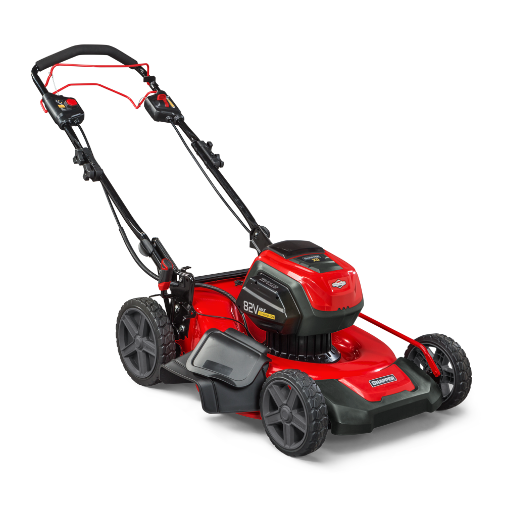

Snapper XD 82V
El Snapper XD 82V es un cortacésped a batería con una potencia impresionante y una excelente autonomía. Con un ancho de corte de 53 cm y una batería de 82 voltios, este modelo es ideal para jardines de gran tamaño que requieren un mantenimiento regular y eficiente.
Este cortacésped ofrece hasta 45 minutos de autonomía con una sola carga, proporcionando un rendimiento consistente y fiable. El sistema de ajuste de altura de corte permite adaptar el corte a tus necesidades específicas, con alturas de corte entre 35 y 95 mm.
El Snapper XD 82V es una solución potente y respetuosa con el medio ambiente para mantener tu jardín en perfectas condiciones. Adquiere tu Snapper XD 82V hoy mismo y disfruta de un jardín impecable sin esfuerzo.
Compra ahora